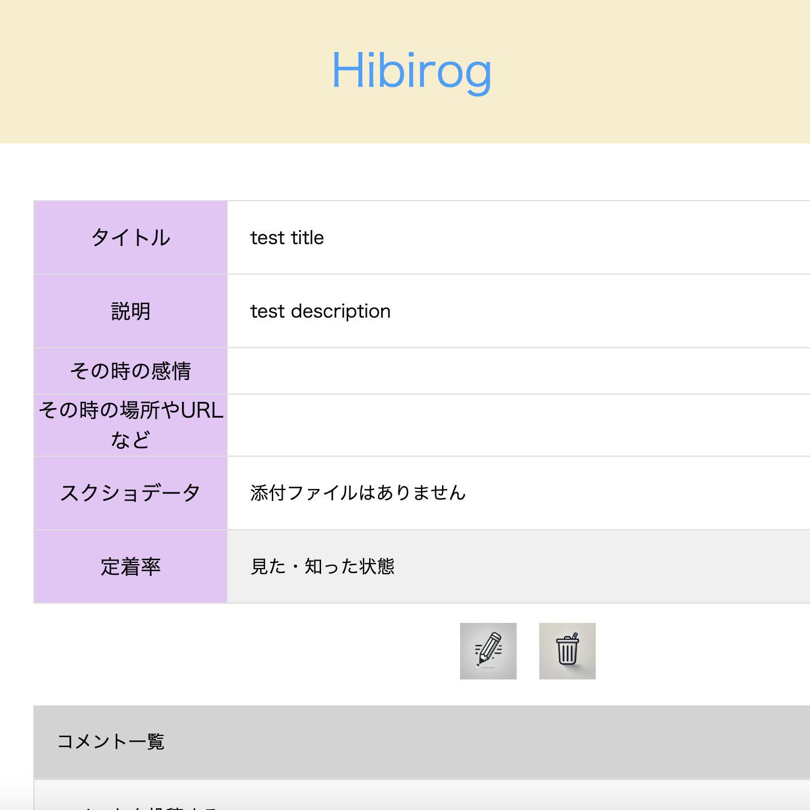
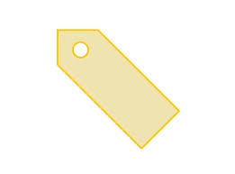

Hibirog(オリジナルアプリ)
開発環境
Ruby / Ruby on Rails / MySQL / GitHub / Heroku / Visual Studio Code / Trello
-
概要
制作時間 80時間 URL https://hibirog-41961.onrender.com/ ID admin PASS 2222 -
動作テスト
テスト用アカウント
mail test1@test.mail, test2@test.mail PASS test111, test222
OUTLINEアプリケーションの概要
オリジナルアプリケーションとして、自身の学習中にとったメモやデータの分散を解決できるようなアプリを作成いたしました。
主な機能は、ユーザー登録機能、日々の学びの記録機能および記録をチャットへ共有する機能、チャット機能、コメント機能などです。
トップページではログアウト状態で、チャットを表示しています。どのようなチャットの内容が投稿されているのか、イメージが湧きやすいようにしました。
ユーザー登録をすると、記録一覧ページが表示され、これは他人には見えないようになっています。定着率の高いものであればチャットへの共有により他人にも情報が共有され、見れるようになります。
知識の定着を目的としているため、記録一覧ページでは一定以上(5段階中4以上)の定着率を選択しないと、チャットページに共有できないようになっています。
-
開発に至った経緯
普段の知識を管理する中で、メモなどの手書きのよるものやデータなど学んだ情報が分散して、探すことに時間がかかってしまい
他の情報に触れることで、集中が途切れたり、モチベーションが下がったりします。
そこで、シンプルな構造で簡単にメモを残し、定着した事を発信できる構造にしました。定着した事を発信する目的としては、学んだことをそのまま鵜呑みにしてアウトプットすると誤解が生まれてしまう可能性があるので、それを避けるためです。学んだ知識を定着させてから発信することで、そこに説得性を持たせ、チャット・コメントなどで質問がある時に説明ができるようになります。
-
開発で工夫したこと
本アプリケーションでは、日々の学んだことを記録というデータで残し、定着させることがメインになっています。
詳細ページでその時の感情やどこで学んだのかを見ることができ、学んだ時の記憶にアプローチできます。
多くの記録・日記アプリが存在する中で、本アプリは記録機能と共有機能に特化し、情報の分散を最小限に抑えることで、学習のモチベーション向上に貢献します。 さらに、検索機能を搭載することで、過去の学習内容を瞬時に呼び出し、必要な情報をタイムリーに提供します。これにより、学習中の集中力を途切れさせることなく、効率的な学習体験を実現します。
-
今後実装したいと思っていること
今後はActionCableを用いて、チャットのリアルタイム通信を実現したいと考えおります。
また記録の整理のためにも、タグ付けの機能追加や、検索方法の追加を考えています。